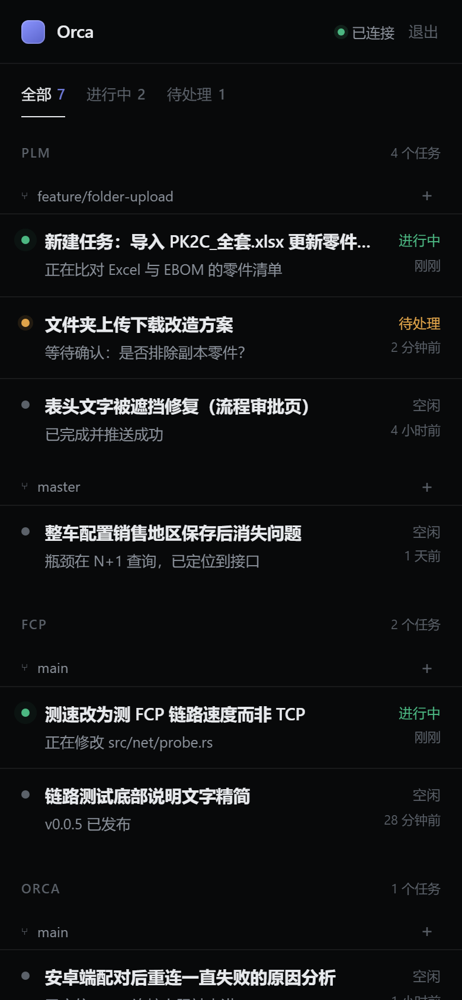
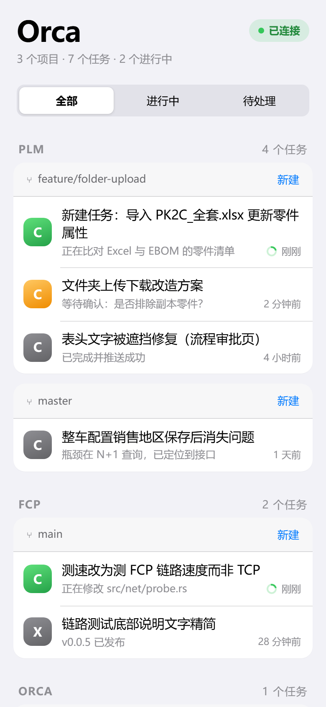
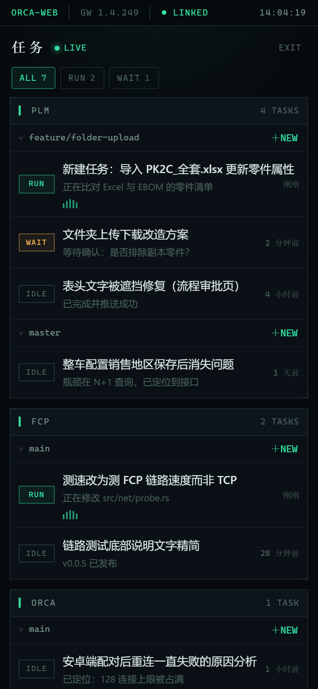
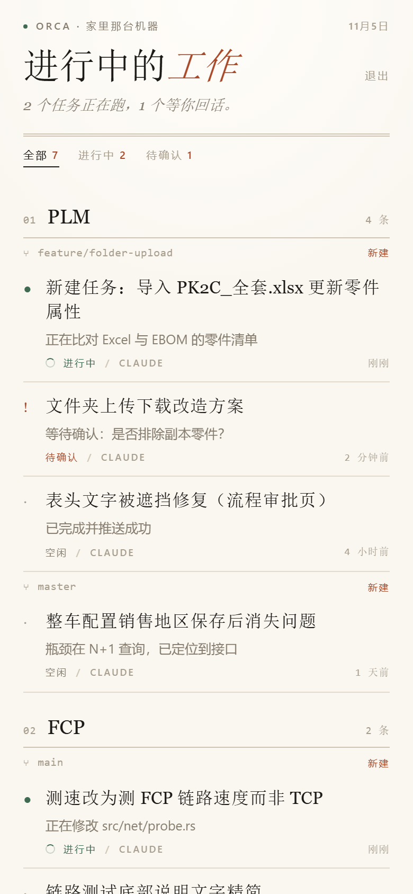
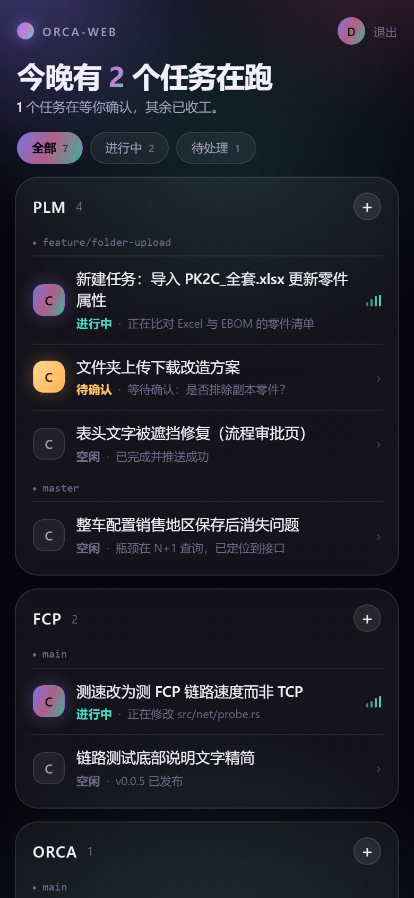

同一份模拟数据、同一套交互：登录 → 任务看板 → 任务详情（含审批卡片）。
手机宽度 390pt，图标之外没有任何图片素材，全部是 CSS 与原生 JS，单文件可直接打开。
已选定 04 纸面编辑，并落进真正的 React 客户端（apps/web）；其余四套保留作后续参考。

Linear 式的深色高密度。发丝线、等宽小字、克制的紫蓝强调色。信息最多，扫读最快。

iOS 设置页的分组卡片、分段控件与大标题。零学习成本，单手操作最稳。

终端气质的深绿黑：状态栏、角标面板、实时波形。适合盯着任务跑的人。

暖纸、衬线标题、脚注式工具调用。像在读一份工作记录，安静、耐看。

渐变光晕、磨砂玻璃与圆角气泡。视觉最讨喜，适合想有点情绪价值的场景。
| 方案 | 明暗 | 信息密度 | 最适合 | 取舍 |
|---|---|---|---|---|
| 01 精密仪表 | 深色 | 高 | 任务多、频繁扫读、夜里看 | 字号偏小，初次使用需要适应 |
| 02 原生手感 | 浅色 | 中 | 手机上最省心、最熟悉 | 偏 iOS；长任务列表略显松散 |
| 03 任务控制台 | 深色 | 高 | 同时跑多个 agent、看实时状态 | 气质强，不一定适合日常阅读 |
| 04 纸面编辑 | 浅色 | 中低 | 读对话、写回复、慢慢看 | 信息密度最低，批量操作稍慢 |
| 05 极光玻璃 | 深色 | 中 | 视觉优先、想有产品感 | 模糊与光晕在低端机上更耗电 |
直接双击任一 HTML，或从本页点开。每个文件都可独立运行。
在本目录启动静态服务，手机访问同一地址，例如 npx serve .。
筛选、进入任务、回复、点“允许”审批、点“停止”结束运行中的任务。